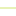

<!doctype html>
<html lang="en">
    <head>
        <meta charset="utf-8">
        <meta http-equiv="X-UA-Compatible" content="IE=edge">
        <meta name="viewport" content="initial-scale=1,user-scalable=no,maximum-scale=1,width=device-width">
        <meta name="mobile-web-app-capable" content="yes">
        <meta name="apple-mobile-web-app-capable" content="yes">
        <link rel="stylesheet" href="css/leaflet.css">
        <link rel="stylesheet" href="css/L.Control.Layers.Tree.css">
        <link rel="stylesheet" href="css/qgis2web.css">
        <link rel="stylesheet" href="css/fontawesome-all.min.css">
        <link rel="stylesheet" href="css/leaflet-measure.css">
        <style>
        html, body, #map {
            width: 100%;
            height: 100%;
            padding: 0;
            margin: 0;
        }
        </style>
        <title>PTN Surabaya Map</title>
    </head>
    <body>
        <div id="map">
        </div>
        <script src="js/qgis2web_expressions.js"></script>
        <script src="js/leaflet.js"></script>
        <script src="js/L.Control.Layers.Tree.min.js"></script>
        <script src="js/leaflet.rotatedMarker.js"></script>
        <script src="js/leaflet.pattern.js"></script>
        <script src="js/leaflet-hash.js"></script>
        <script src="js/Autolinker.min.js"></script>
        <script src="js/rbush.min.js"></script>
        <script src="js/labelgun.min.js"></script>
        <script src="js/labels.js"></script>
        <script src="js/leaflet-measure.js"></script>
        <script src="data/WalkingDistance_1.js"></script>
        <script src="data/PublicUni_2.js"></script>
        <script>
        var map = L.map('map', {
            zoomControl:false, maxZoom:28, minZoom:1
        })
        var hash = new L.Hash(map);
        map.attributionControl.setPrefix('<a href="https://github.com/tomchadwin/qgis2web" target="_blank">qgis2web</a> &middot; <a href="https://leafletjs.com" title="A JS library for interactive maps">Leaflet</a> &middot; <a href="https://qgis.org">QGIS</a>');
        var autolinker = new Autolinker({truncate: {length: 30, location: 'smart'}});
        // remove popup's row if "visible-with-data"
        function removeEmptyRowsFromPopupContent(content, feature) {
         var tempDiv = document.createElement('div');
         tempDiv.innerHTML = content;
         var rows = tempDiv.querySelectorAll('tr');
         for (var i = 0; i < rows.length; i++) {
             var td = rows[i].querySelector('td.visible-with-data');
             var key = td ? td.id : '';
             if (td && td.classList.contains('visible-with-data') && feature.properties[key] == null) {
                 rows[i].parentNode.removeChild(rows[i]);
             }
         }
         return tempDiv.innerHTML;
        }
        // add class to format popup if it contains media
		function addClassToPopupIfMedia(content, popup) {
			var tempDiv = document.createElement('div');
			tempDiv.innerHTML = content;
			if (tempDiv.querySelector('td img')) {
				popup._contentNode.classList.add('media');
					// Delay to force the redraw
					setTimeout(function() {
						popup.update();
					}, 10);
			} else {
				popup._contentNode.classList.remove('media');
			}
		}
        var title = new L.Control({'position':'topright'});
        title.onAdd = function (map) {
            this._div = L.DomUtil.create('div', 'info');
            this.update();
            return this._div;
        };
        title.update = function () {
            this._div.innerHTML = '<h2>PTN Surabaya Map</h2>';
        };
        title.addTo(map);
        var zoomControl = L.control.zoom({
            position: 'topleft'
        }).addTo(map);
        var measureControl = new L.Control.Measure({
            position: 'topleft',
            primaryLengthUnit: 'feet',
            secondaryLengthUnit: 'miles',
            primaryAreaUnit: 'sqfeet',
            secondaryAreaUnit: 'sqmiles'
        });
        measureControl.addTo(map);
        document.getElementsByClassName('leaflet-control-measure-toggle')[0].innerHTML = '';
        document.getElementsByClassName('leaflet-control-measure-toggle')[0].className += ' fas fa-ruler';
        var bounds_group = new L.featureGroup([]);
        function setBounds() {
            if (bounds_group.getLayers().length) {
                map.fitBounds(bounds_group.getBounds());
            }
        }
        map.createPane('pane_OSMStandard_0');
        map.getPane('pane_OSMStandard_0').style.zIndex = 400;
        var layer_OSMStandard_0 = L.tileLayer('http://tile.openstreetmap.org/{z}/{x}/{y}.png', {
            pane: 'pane_OSMStandard_0',
            opacity: 1.0,
            attribution: '<a href="https://www.openstreetmap.org/copyright">© OpenStreetMap contributors, CC-BY-SA</a>',
            minZoom: 1,
            maxZoom: 28,
            minNativeZoom: 0,
            maxNativeZoom: 19
        });
        layer_OSMStandard_0;
        map.addLayer(layer_OSMStandard_0);
        function pop_WalkingDistance_1(feature, layer) {
            var popupContent = '<table>\
                    <tr>\
                        <th scope="row">Access</th>\
                        <td>' + (feature.properties['Access'] !== null ? autolinker.link(feature.properties['Access'].toLocaleString()) : '') + '</td>\
                    </tr>\
                </table>';
            var content = removeEmptyRowsFromPopupContent(popupContent, feature);
			layer.on('popupopen', function(e) {
				addClassToPopupIfMedia(content, e.popup);
			});
			layer.bindPopup(content, { maxHeight: 400 });
        }

        function style_WalkingDistance_1_0(feature) {
            switch(String(feature.properties['Access'])) {
                case '1,2km (15 menit)':
                    return {
                pane: 'pane_WalkingDistance_1',
                opacity: 1,
                color: 'rgba(203,106,185,1.0)',
                dashArray: '',
                lineCap: 'square',
                lineJoin: 'bevel',
                weight: 1.0,
                fillOpacity: 0,
                interactive: true,
            }
                    break;
                case '2,4km (30 menit)':
                    return {
                pane: 'pane_WalkingDistance_1',
                opacity: 1,
                color: 'rgba(217,235,135,1.0)',
                dashArray: '',
                lineCap: 'square',
                lineJoin: 'bevel',
                weight: 1.0,
                fillOpacity: 0,
                interactive: true,
            }
                    break;
            }
        }
        map.createPane('pane_WalkingDistance_1');
        map.getPane('pane_WalkingDistance_1').style.zIndex = 401;
        map.getPane('pane_WalkingDistance_1').style['mix-blend-mode'] = 'normal';
        var layer_WalkingDistance_1 = new L.geoJson(json_WalkingDistance_1, {
            attribution: '',
            interactive: true,
            dataVar: 'json_WalkingDistance_1',
            layerName: 'layer_WalkingDistance_1',
            pane: 'pane_WalkingDistance_1',
            onEachFeature: pop_WalkingDistance_1,
            style: style_WalkingDistance_1_0,
        });
        bounds_group.addLayer(layer_WalkingDistance_1);
        map.addLayer(layer_WalkingDistance_1);
        function pop_PublicUni_2(feature, layer) {
            var popupContent = '<table>\
                    <tr>\
                        <th scope="row">Nama</th>\
                        <td>' + (feature.properties['Nama'] !== null ? autolinker.link(feature.properties['Nama'].toLocaleString()) : '') + '</td>\
                    </tr>\
                    <tr>\
                        <th scope="row">Kampus</th>\
                        <td>' + (feature.properties['Kampus'] !== null ? autolinker.link(feature.properties['Kampus'].toLocaleString()) : '') + '</td>\
                    </tr>\
                    <tr>\
                        <th scope="row">RANKING QS</th>\
                        <td>' + (feature.properties['RANKING QS'] !== null ? autolinker.link(feature.properties['RANKING QS'].toLocaleString()) : '') + '</td>\
                    </tr>\
                    <tr>\
                        <th scope="row">TAHUN BERD</th>\
                        <td>' + (feature.properties['TAHUN BERD'] !== null ? autolinker.link(feature.properties['TAHUN BERD'].toLocaleString()) : '') + '</td>\
                    </tr>\
                    <tr>\
                        <th scope="row">FAKULTAS</th>\
                        <td>' + (feature.properties['FAKULTAS'] !== null ? autolinker.link(feature.properties['FAKULTAS'].toLocaleString()) : '') + '</td>\
                    </tr>\
                    <tr>\
                        <td colspan="2">' + (feature.properties['FOTO'] !== null ? '' : '') + '</td>\
                    </tr>\
                </table>';
            var content = removeEmptyRowsFromPopupContent(popupContent, feature);
			layer.on('popupopen', function(e) {
				addClassToPopupIfMedia(content, e.popup);
			});
			layer.bindPopup(content, { maxHeight: 400 });
        }

        function style_PublicUni_2_0(feature) {
            switch(String(feature.properties['Kampus'])) {
                case 'ITS Manyar':
                    return {
                pane: 'pane_PublicUni_2',
                radius: 4.0,
                opacity: 1,
                color: 'rgba(35,35,35,1.0)',
                dashArray: '',
                lineCap: 'butt',
                lineJoin: 'miter',
                weight: 1,
                fill: true,
                fillOpacity: 1,
                fillColor: 'rgba(84,57,238,1.0)',
                interactive: true,
            }
                    break;
                case 'ITS Sukolilo':
                    return {
                pane: 'pane_PublicUni_2',
                radius: 4.0,
                opacity: 1,
                color: 'rgba(35,35,35,1.0)',
                dashArray: '',
                lineCap: 'butt',
                lineJoin: 'miter',
                weight: 1,
                fill: true,
                fillOpacity: 1,
                fillColor: 'rgba(222,140,32,1.0)',
                interactive: true,
            }
                    break;
                case 'UIN Sunan Ampel':
                    return {
                pane: 'pane_PublicUni_2',
                radius: 4.0,
                opacity: 1,
                color: 'rgba(35,35,35,1.0)',
                dashArray: '',
                lineCap: 'butt',
                lineJoin: 'miter',
                weight: 1,
                fill: true,
                fillOpacity: 1,
                fillColor: 'rgba(132,90,51,1.0)',
                interactive: true,
            }
                    break;
                case 'UNAIR A':
                    return {
                pane: 'pane_PublicUni_2',
                radius: 4.0,
                opacity: 1,
                color: 'rgba(35,35,35,1.0)',
                dashArray: '',
                lineCap: 'butt',
                lineJoin: 'miter',
                weight: 1,
                fill: true,
                fillOpacity: 1,
                fillColor: 'rgba(137,220,129,1.0)',
                interactive: true,
            }
                    break;
                case 'UNAIR B':
                    return {
                pane: 'pane_PublicUni_2',
                radius: 4.0,
                opacity: 1,
                color: 'rgba(35,35,35,1.0)',
                dashArray: '',
                lineCap: 'butt',
                lineJoin: 'miter',
                weight: 1,
                fill: true,
                fillOpacity: 1,
                fillColor: 'rgba(180,77,147,1.0)',
                interactive: true,
            }
                    break;
                case 'UNAIR C':
                    return {
                pane: 'pane_PublicUni_2',
                radius: 4.0,
                opacity: 1,
                color: 'rgba(35,35,35,1.0)',
                dashArray: '',
                lineCap: 'butt',
                lineJoin: 'miter',
                weight: 1,
                fill: true,
                fillOpacity: 1,
                fillColor: 'rgba(233,87,68,1.0)',
                interactive: true,
            }
                    break;
                case 'UNESA Ketintang':
                    return {
                pane: 'pane_PublicUni_2',
                radius: 4.0,
                opacity: 1,
                color: 'rgba(35,35,35,1.0)',
                dashArray: '',
                lineCap: 'butt',
                lineJoin: 'miter',
                weight: 1,
                fill: true,
                fillOpacity: 1,
                fillColor: 'rgba(159,136,61,1.0)',
                interactive: true,
            }
                    break;
                case 'UNESA Lidah Wetan':
                    return {
                pane: 'pane_PublicUni_2',
                radius: 4.0,
                opacity: 1,
                color: 'rgba(35,35,35,1.0)',
                dashArray: '',
                lineCap: 'butt',
                lineJoin: 'miter',
                weight: 1,
                fill: true,
                fillOpacity: 1,
                fillColor: 'rgba(104,196,115,1.0)',
                interactive: true,
            }
                    break;
                case 'UPNV Jatim':
                    return {
                pane: 'pane_PublicUni_2',
                radius: 4.0,
                opacity: 1,
                color: 'rgba(35,35,35,1.0)',
                dashArray: '',
                lineCap: 'butt',
                lineJoin: 'miter',
                weight: 1,
                fill: true,
                fillOpacity: 1,
                fillColor: 'rgba(81,92,172,1.0)',
                interactive: true,
            }
                    break;
            }
        }
        map.createPane('pane_PublicUni_2');
        map.getPane('pane_PublicUni_2').style.zIndex = 402;
        map.getPane('pane_PublicUni_2').style['mix-blend-mode'] = 'normal';
        var layer_PublicUni_2 = new L.geoJson(json_PublicUni_2, {
            attribution: '',
            interactive: true,
            dataVar: 'json_PublicUni_2',
            layerName: 'layer_PublicUni_2',
            pane: 'pane_PublicUni_2',
            onEachFeature: pop_PublicUni_2,
            pointToLayer: function (feature, latlng) {
                var context = {
                    feature: feature,
                    variables: {}
                };
                return L.circleMarker(latlng, style_PublicUni_2_0(feature));
            },
        });
        bounds_group.addLayer(layer_PublicUni_2);
        map.addLayer(layer_PublicUni_2);
        var baseMaps = {};
        var overlaysTree = [
            {label: 'Public Uni<br /><table><tr><td style="text-align: center;"></td><td>ITS Manyar</td></tr><tr><td style="text-align: center;"></td><td>ITS Sukolilo</td></tr><tr><td style="text-align: center;"></td><td>UIN Sunan Ampel</td></tr><tr><td style="text-align: center;"></td><td>UNAIR A</td></tr><tr><td style="text-align: center;"></td><td>UNAIR B</td></tr><tr><td style="text-align: center;"></td><td>UNAIR C</td></tr><tr><td style="text-align: center;"></td><td>UNESA Ketintang</td></tr><tr><td style="text-align: center;"></td><td>UNESA Lidah Wetan</td></tr><tr><td style="text-align: center;"></td><td>UPNV Jatim</td></tr></table>', layer: layer_PublicUni_2},
            {label: 'Walking Distance<br /><table><tr><td style="text-align: center;"></td><td>1,2km (15 minutes)</td></tr><tr><td style="text-align: center;"></td><td>2,4km (30 minutes)</td></tr></table>', layer: layer_WalkingDistance_1},
            {label: "OSM Standard", layer: layer_OSMStandard_0},]
        var lay = L.control.layers.tree(null, overlaysTree,{
            //namedToggle: true,
            //selectorBack: false,
            //closedSymbol: '&#8862; &#x1f5c0;',
            //openedSymbol: '&#8863; &#x1f5c1;',
            //collapseAll: 'Collapse all',
            //expandAll: 'Expand all',
            collapsed: true,
        });
        lay.addTo(map);
        setBounds();
        </script>
    </body>
</html>
